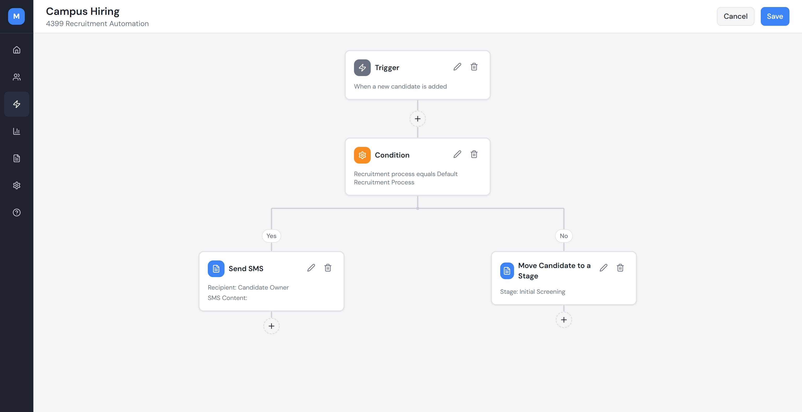
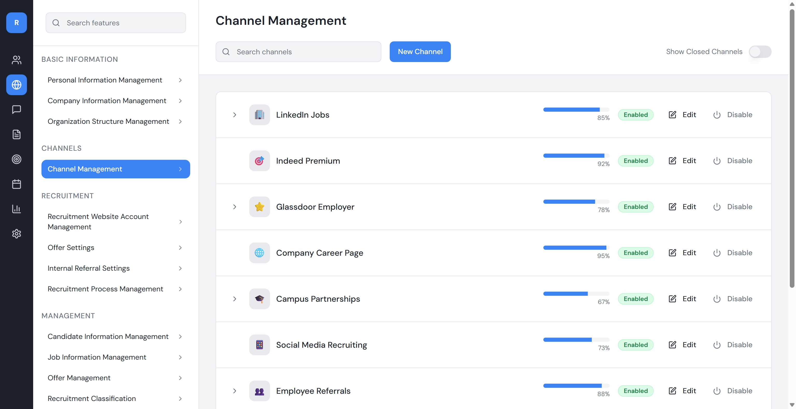
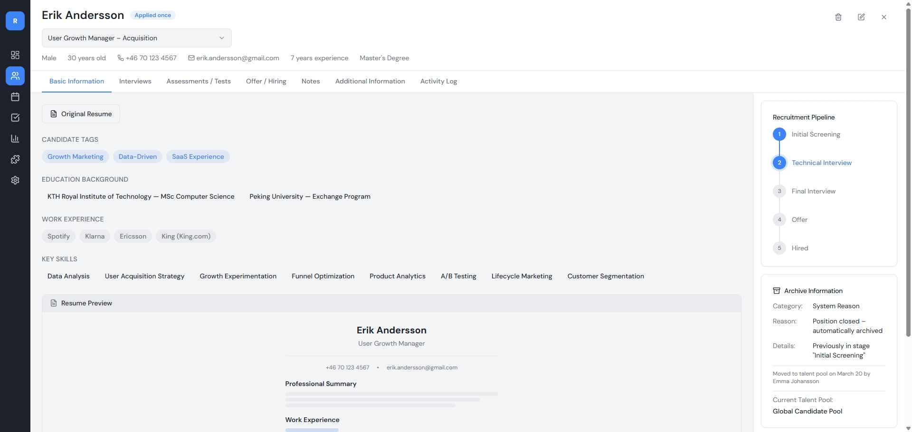
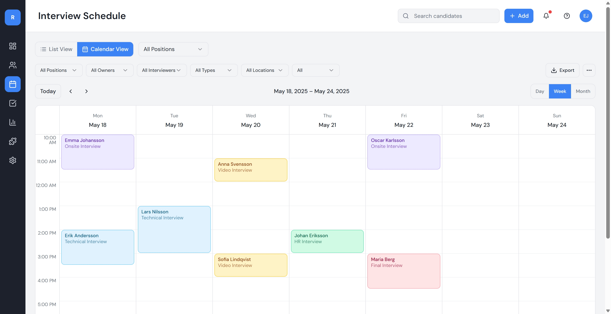
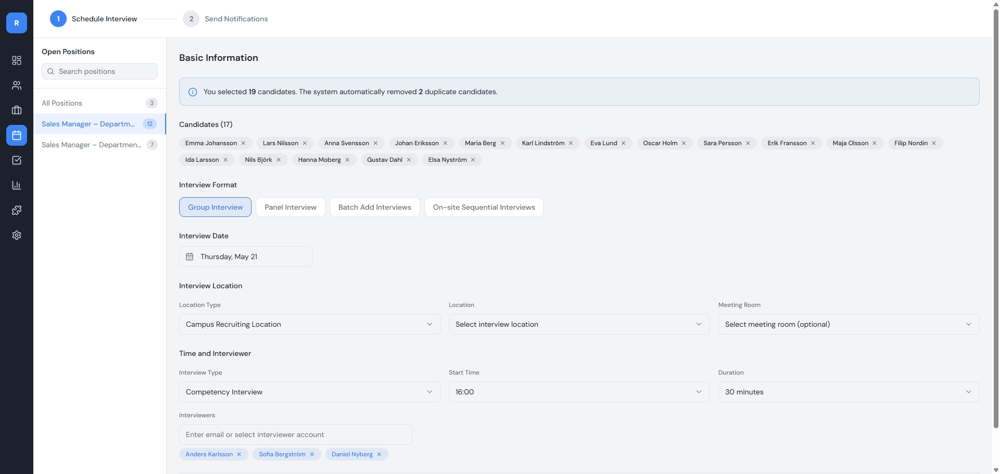
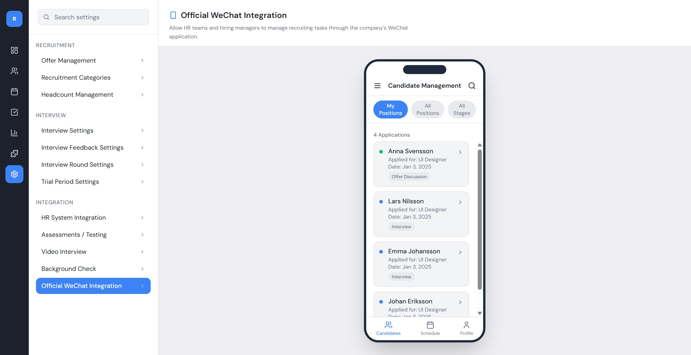
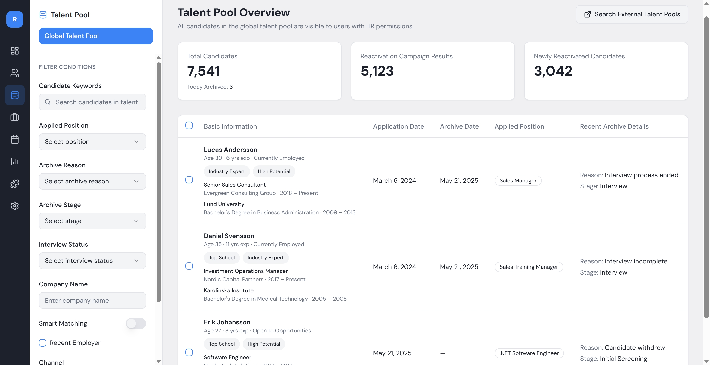
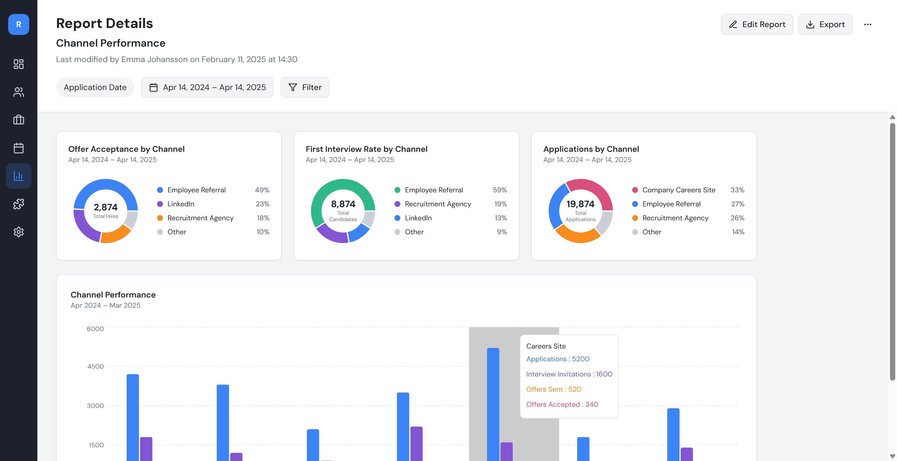

Redesigning the End-to-End Recruitment Workflow for an Enterprise HR Team
Before designing anything, I spent time with the HR team watching how they actually worked. The problems weren't abstract process inefficiencies. They were specific, daily friction points that recruiters had quietly accepted as normal.
HR triggered each pipeline step by hand: moving candidates forward, sending notifications, marking rejections. With 100+ open roles at once, things fell through the cracks. Hiring timelines stretched not because the process was slow, but because someone had to remember to advance it.
Hiring managers were deep in projects, and interview feedback wasn't their top priority. Without automatic reminders, feedback sat incomplete for days. By the time HR followed up, strong candidates had accepted other offers. Crucial info was scattered across group chats, making it hard to track.
A panel interview involving tech, product, and business teams meant manually checking 3–5 people's calendars, confirming through group chat, and then chasing them again for feedback afterward. This coordination overhead was eating up most of HR's workday.








The original automation flow builder gave HR full control over every step — node by node, rule by rule. In testing, users stalled. The blank canvas felt overwhelming, not empowering. I restructured it into two modes: start from a preset template (covering the most common hiring flows), or build from scratch. Most users defaulted to templates and only customized the parts that differed. The barrier dropped, and average setup time fell from 15 minutes to under 3 minutes.
Post-launch data showed interview feedback submission was stuck below target. Interviewers weren't skipping on purpose — they were simply forgetting, or couldn't find the form when they did remember. I added a timed automatic reminder sent after each interview, with a deep link that opened directly to that candidate's feedback form. No searching, no extra steps. Submission rate improved by 60%.
Three months post-launch, internal before-and-after comparison:
As the sole designer, I learned to make decisions without anyone reviewing my work. That meant building my own checkpoints — writing out the reasoning behind each choice, pressure-testing it against edge cases, and being willing to reverse course when the logic didn't hold. The absence of a design team wasn't a gap to compensate for; it was a forcing function for cleaner thinking.
My initial instinct was to automate everything possible. But during testing, HR pushed back: "What if the system automatically rejects someone I wanted to keep?" The final design kept human confirmation at critical decision points. Automation handled the repetitive pushing and notifying, not the judgment calls. The lesson: automation should reduce effort, not override judgment.